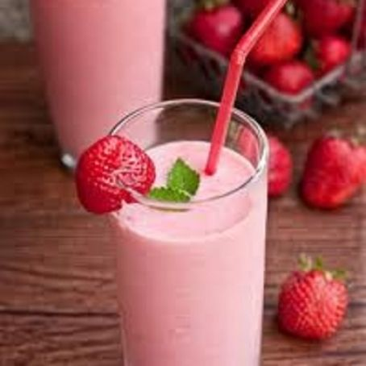
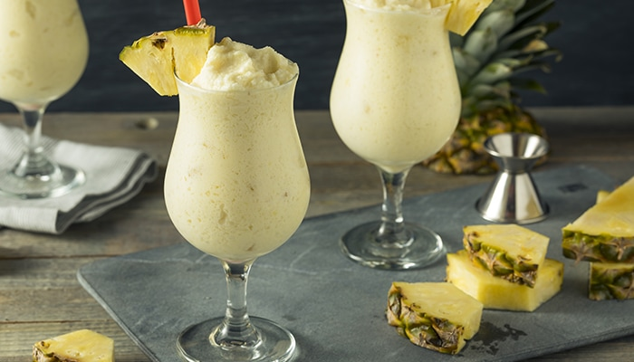
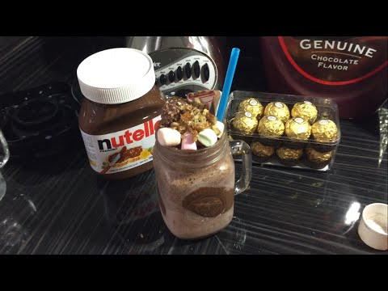

malteada de fresa y albahaca
ingredientes:
- 11taza de hojas de albahaca
- 1/2 taza de leche
- 3 bolas de nieve de fresa
modo de preparacion:
existen unas maquinas especiales para hacer malteadas pero la licuadora
funciona bastante bien,solo mete todos los ingredientes,licuas y ¡listo!
puedes adornar con hojitas de albahaca o crema batida

malteada de piña colada
ingredientes:
- 3 bolas de nieve de yogurt
- 1 taza de piña en pedacitos
- 1 taza de leche de coco
- 3 cdt. de ron añejo
modo de preparacion:
solo basta con introducir todos los ingredientes en la licuador servir y decorar

malteada de nutella
ingredientes:
- 1/3 de taza de nutella
- 1 taza de leche
- 3 bolas de nieve de yogurt
modo de preparacion:
meter todos los ingredientes en la licuadora o si tu cuentas con una maquina preparadora
de malteadas ¡perfecto!, licuas ,sirves y decoras con crema batida,algunos bombones y chocolates.
